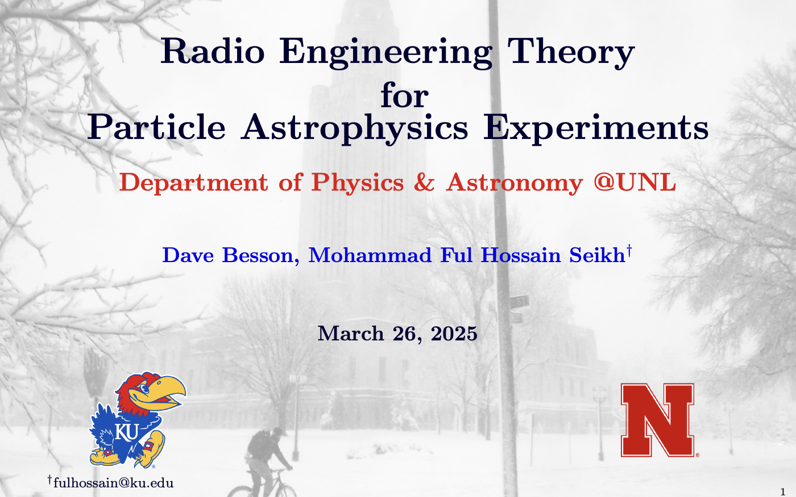
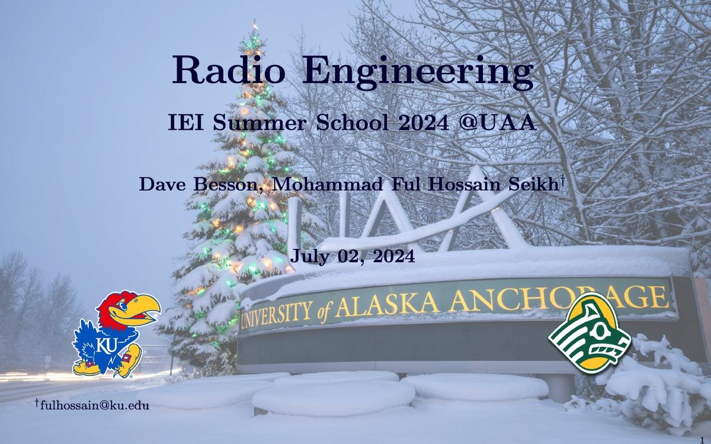
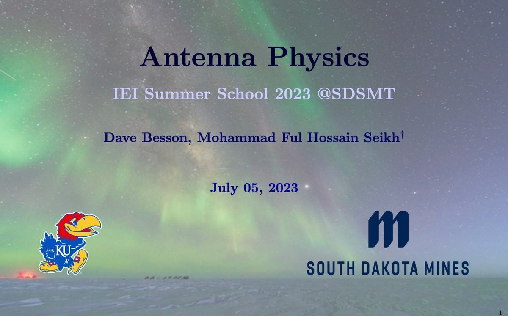
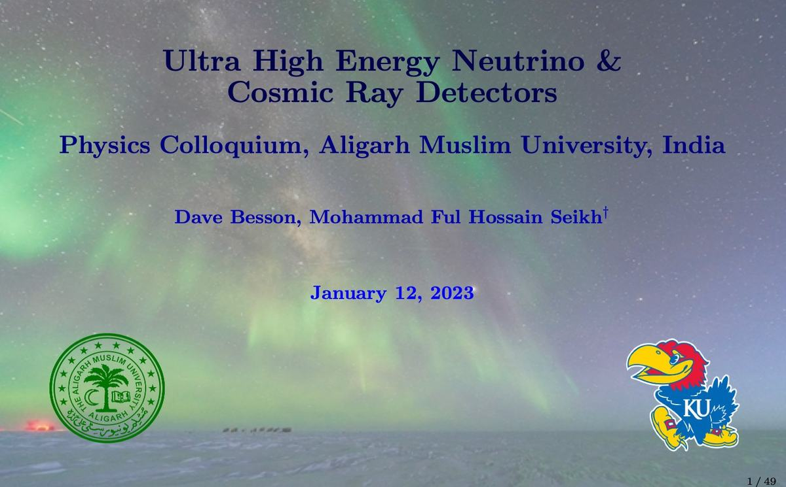
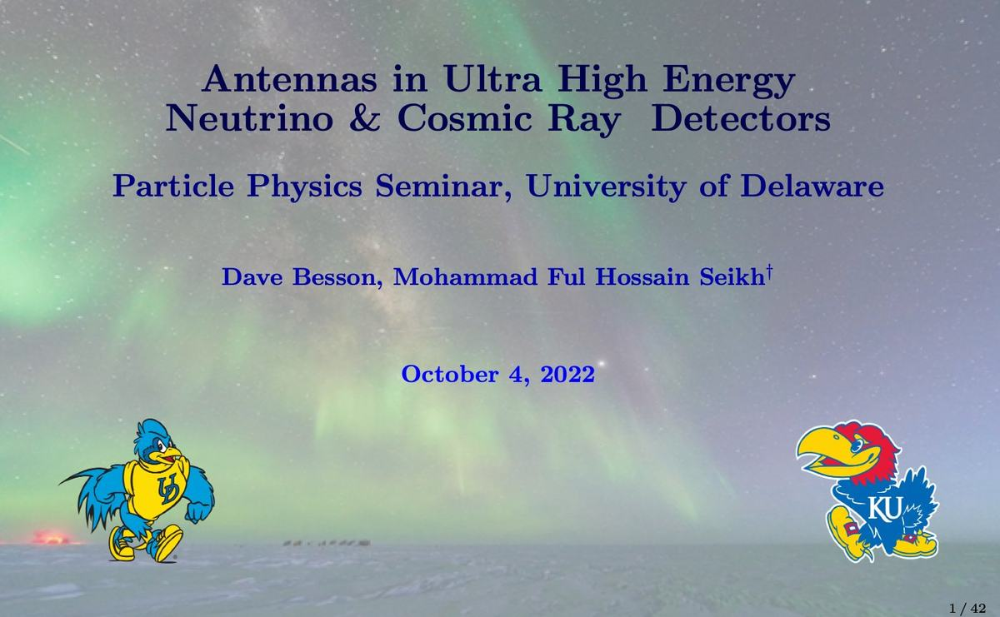
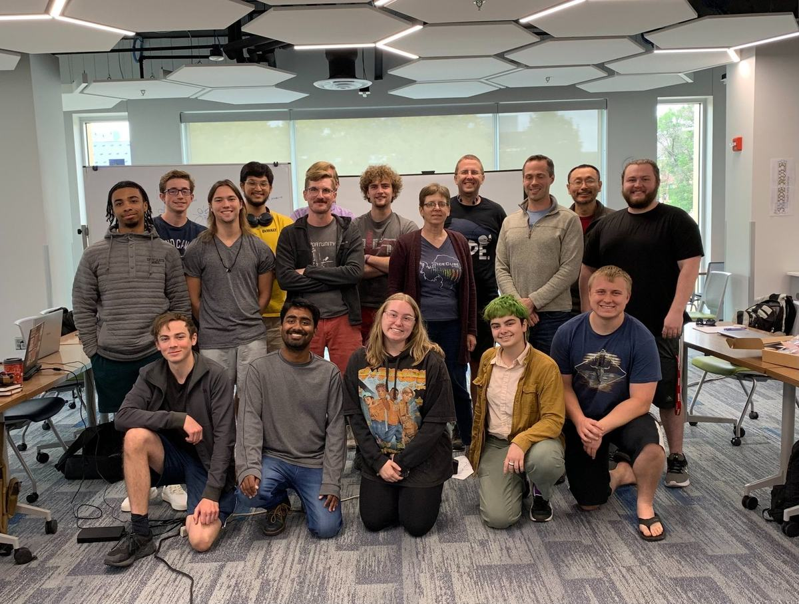

2026
2026Searching for the Universe’s Highest-Energy Neutrinos with Radio Detectors
Particle Physics Seminar · Carnegie Mellon University
Sep 9, 2026Talks
Invited presentations on ultra-high energy neutrinos, radio detector instrumentation, antenna physics, and particle astrophysics.
2026Particle Physics Seminar · Carnegie Mellon University
Sep 9, 2026
2025HEP Seminar · University of Nebraska-Lincoln
Mar 26, 2025 2025
2025Astroparticle Seminar · The Ohio State University
Jan 22, 2025
2024IEI Summer School Lecture Series · University of Alaska Anchorage
Jul 2–5, 2024 2023
2023ICEHAP Seminar · Chiba University, Japan
Aug 9, 2023
2023IEI Summer School Lecture Series · South Dakota School of Mines
Jul 2–5, 2023
2023Physics Colloquium · Aligarh Muslim University, India
Jan 12, 2023
2022Particle Physics Seminar · University of Delaware
Oct 4, 2022Teaching & Lecture Series
Invited multi-day lecture series on radio engineering, antenna physics, and measurement techniques at the 2023 South Dakota Mines and 2024 University of Alaska Anchorage IceCube EPSCoR Initiative (IEI) summer schools.

